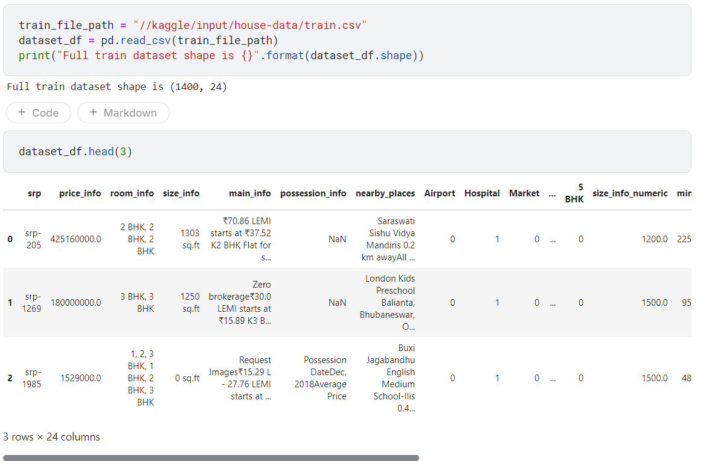
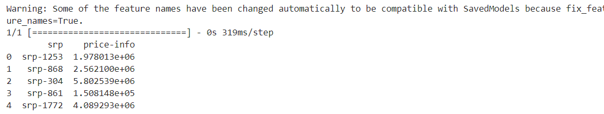
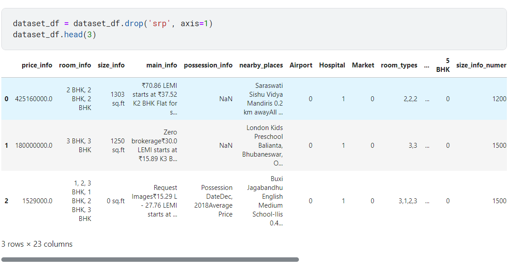
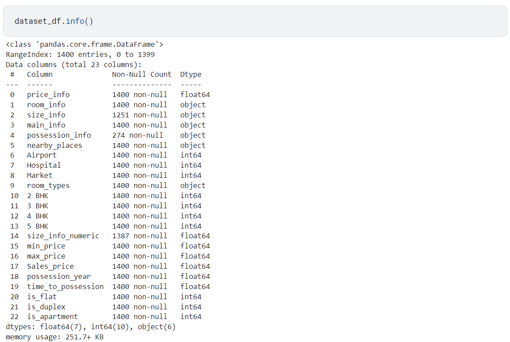
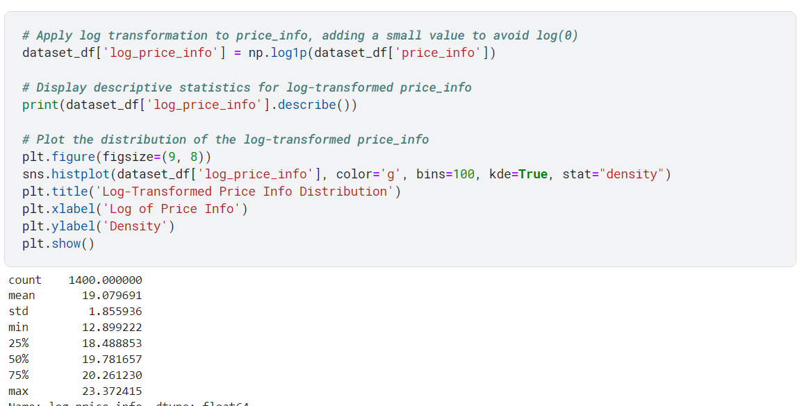
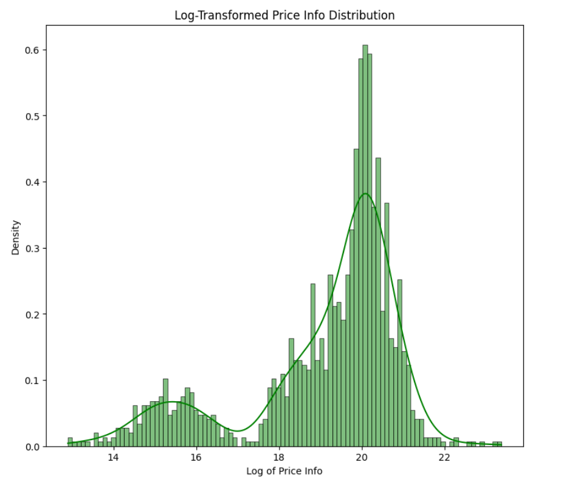

Timeline Summary: House Price Prediction model
Web Scraping:
The project began by scraping housing data from housing.com for Bhubaneswar using Selenium
and BeautifulSoup. The script collected key details like price, room size, possession date,
and nearby amenities, which were stored in a JSON file for further processing.
Data Cleaning and Preprocessing:
The next step involved cleaning the scraped data. This included handling missing values,
correcting data types, and transforming categorical variables. Additionally, the 'nearby_places'
data was refined to create specific columns indicating the presence of key amenities
(e.g., Airport, Hospital) within 5 km.
Feature Engineering:
New features were created from the existing data to improve the model's accuracy.
For instance, distance-based amenities and room-to-size ratios were derived to provide
more insights into the listings.
Model Development:
A multiple linear regression model was chosen to predict house prices based on the cleaned and
engineered features. The model was trained using the processed data, optimizing parameters to minimize
prediction errors.
Model Testing and Evaluation:
The model was tested on a separate dataset to evaluate its performance. Key metrics like R-squared and
Mean Absolute Error (MAE) were used to assess its accuracy and reliability.
Prediction:
Finally, the model was used to predict house prices for new listings, providing a data-driven estimate
of property values in Bhubaneswar.
Import Required Packages
Load and Explore Data

Log Transformation
 Apply a log transformation to the `price_info` column to stabilize variance and normalize the distribution.
Data Visualization
 Plot histograms for numeric features.
Split Dataset
 Split the dataset into training and validation sets.
Model Inspection
 Inspect variable importances from a model (assuming the model `rf` is defined and trained elsewhere in the code).
Test Data Preparation
 Load the test dataset, extract and remove the 'srp' column, and add the `log_price_info` feature.